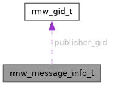

- Generated by
 1.15.0
1.15.0
|
nros rmw-cffi
C vtable for plugging a third-party RMW backend into nros
|
#include <rmw_entity.h>

Data Fields | |
| bool | from_intra_process |
| uint64_t | publication_sequence_number |
| rmw_gid_t | publisher_gid |
| rmw_time_point_value_t | received_timestamp |
| uint64_t | reception_sequence_number |
| rmw_time_point_value_t | source_timestamp |
Per-sample metadata — upstream rmw_message_info_t, field for field.
Phase 376 W4. Two channels carry this metadata to Rust callers today. A backend that fills take_with_info reports it here, in caller-owned storage, and the runtime dispatches that slot whenever it is non-NULL (issue 1495 — before that nothing called it, and a C/C++ backend such as Cyclone delivered every sample with no metadata at all). The Rust adapter instead writes MESSAGE_INFO_TABLE, a side table in nros-rmw-cffi keyed on the subscription's backend_data ADDRESS. That table is a workaround, not a design: it claims a pool slot per subscription and never releases it, so a reused handle address inherits the previous subscription's metadata.
Passing the struct by pointer on the take call — which is what upstream does — removes all of that: the caller owns the storage, it lives exactly as long as the call, and every backend can fill it.
Retiring the side table is NOT part of this change; the take_with_info slots are the mechanism that makes retiring it possible.
| bool rmw_message_info_t::from_intra_process |
True when the sample never left the image (Zephyr's Z_FEATURE_LOCAL_SUBSCRIBER, DDS intra-process).
| uint64_t rmw_message_info_t::publication_sequence_number |
Publisher-side sequence, or RMW_MESSAGE_INFO_SEQUENCE_NUMBER_UNSUPPORTED. Whether this is real is what feature_supported answers.
| rmw_gid_t rmw_message_info_t::publisher_gid |
Which publisher sent it. All-zero data = unknown.
| rmw_time_point_value_t rmw_message_info_t::received_timestamp |
Subscriber's clock at reception, ns. 0 = receptions are not stamped.
| uint64_t rmw_message_info_t::reception_sequence_number |
Subscriber-side reception count, or the same sentinel.
| rmw_time_point_value_t rmw_message_info_t::source_timestamp |
Publisher's clock at publication, ns. 0 = no source timestamp.